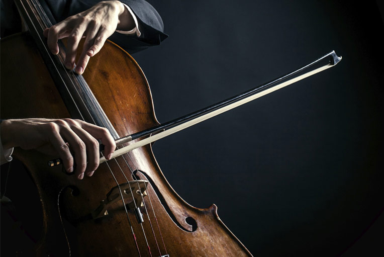

<!DOCTYPE HTML PUBLIC "-//W3C//DTD HTML 4.01 Frameset//EN" "http://www.w3.org/TR/html4/frameset.dtd">
<HTML lang="ua">

<head>
    <meta charset="utf-8">
    <title>Лабораторна 1</title>
    <link rel="stylesheet" href="styles.css">
</head>
<frameset>
    <!--rows="25%,75%"<frameset cols="90,10">
        <frame src="top.html" name="TOP" scrolling="no" noresize>
            <frame src="top_2.html" name="TOP" scrolling="no" noresize></frame>
    </frameset>-->
    <frameset cols="10,90">
        <frame src="frame4.html" name="MENU">
            <frame src="frame1.html" name="CONTENT">
    </frameset>
</frameset>

<body>
    <!--
    <h1 align="center">Трохи про музику</h1>

    <iframe src="frame4.html" width="190" height="1010" align="right"></iframe>
    <iframe src="frame1.html" width="1300" height="300" align="left"></iframe>
    <iframe src="frame2.html" width="1300" height="400" align="center" name="frame_test"></iframe>
    <iframe src="frame3.html" width="1300" height="300" align="left"></iframe>


    <p align=justify> 45 років тому, у 1975 році за рішенням <b>ЮНЕСКО</b> був заснований <small>Міжнародний день музики</small> — свято, що об'єднує серця всіх, хто пише, грає, співає або просто не уявляє ні дня свого життя без <big>музики</big>. Засновником свята виступила
        Міжнародна музична рада (IMC) при <i>ЮНЕСКО</i>. На <strike>15-й</strike> Генеральній асамблеї IMC,
    </p>
    <p></p>
    <p></p>
    <p align=justify>проведеній в 1973-му році в швейцарському місті Лозанна, було ухвалене відповідне рішення. Серед ініціаторів Міжнародного дня музики виступили багато музикантів, композиторів та діячів міжнародних музичних організацій <sub>і товариств</sub>. Щорічно
        День музики відзначається проведенням концертів та концертних програм за участю кращих художніх колективів, музикантів та артистів. По усьому світі звучать безцінні твори і шедеври, <em>що стали надбанням</em> світової музичної культури. Сьогоднішнє
        свято музики стосується майже кожної людини. Адже мову музики розуміють всі - незалежно від національності, віку чи соціального статусу. І <code>саме у музиці людина знаходить</code> натхнення й сили, які розкривають і <s>очищують її душу</s>!
        Коли на <u>передовій випадають хвилини тиші</u>, втомлені хлопці співають під гітару фронтових пісень. Найулюбленішою композицією тут вважають "Край землі" Арсена Мірзояна.</p>

    <h2>Поїхали</h2>
    <p align=left>
        1. Слово "музика" прийшло до нас із <b>стародавньої Греції</b>. Музи в грецькій міфології,<kbd> вони ж дочки Зевса</kbd>, протегували мистецтвам і наукам. Але, як не дивно, серед них не було тієї, яка відповідала б саме за мистецтво звуку. <br>2.
        Всі пісні асоціюються з певними подіями і людьми, <samp>що викликали сильні емоції</samp>. <br>3. Можна написати хорошу музику навіть не знаючи нотної грамоти. Жоден з «бітлів» не знав музичних нот. <br>4. Легендарна пісня «Happy Birthday to You»
        захищена авторськими правами і приносить власнику цих прав <strong>ні мало ні багато</strong> 2 мільйони доларів на рік. Ви можете спокійно заспівати її своїм друзям чи родині, але за ширше використання доведеться заплатити.
    </p>

    <h3>І ще трохи</h3>
    <p align="center">
        5. Британська армія використовувала пісні <sub>Брітні Спірс</sub> для того, щоб відлякувати сомалійських піратів. Заради справедливості треба сказати, що пісні Брітні зовсім не такі жахливі.
        <br>6. Суворі музиканти не бояться суворого клімату. Metallica отримала звання першої і єдиної групи, яка давала концерти на всіх семи континентах. Вона опинилася в "Книзі рекордів Гіннеса" після того, як відіграла концерт в Антарктиці.
    </p>
    <h4>Продовження</h4>
    <p align=right>
        7. Існують квіти-меломани. <strike>Рослини зазвичай надають перевагу класиці</strike>. Квіти ростуть швидше, якщо вони «прослуховують» музику.
        <br>8. Музика впливає на стан нашого організму. Наше серце підлаштовується під ритм мелодії, яку ми слухаємо.
    </p>
    <h5>Майже кінець</h5>
    <p align="center">
        9. <tt>Музика здатна зробити</tt> нас щасливішими. Вона викликає активність <var>в тій же частині мозку</var>, яка виробляє «гормон задоволення» — допамін. 10. Якщо комусь здається, що він не любить музику або не розуміє її — це означає, що він
        усього лише не встиг знайти свої улюблений напрям. Не треба боятися<sup>відкривати</sup> для себе нове і експериментувати зі своїм музичним смаком.
    </p>
    <h6>Фінал</h6>
    <p align=right>
        <b>Шукайте свою музику і хай співає ваша душа!</b>
    </p>
-->


</body>

</HTML>